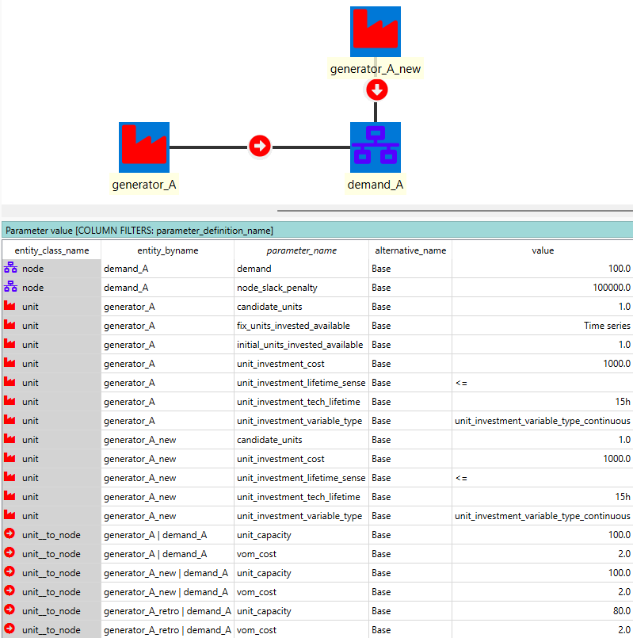
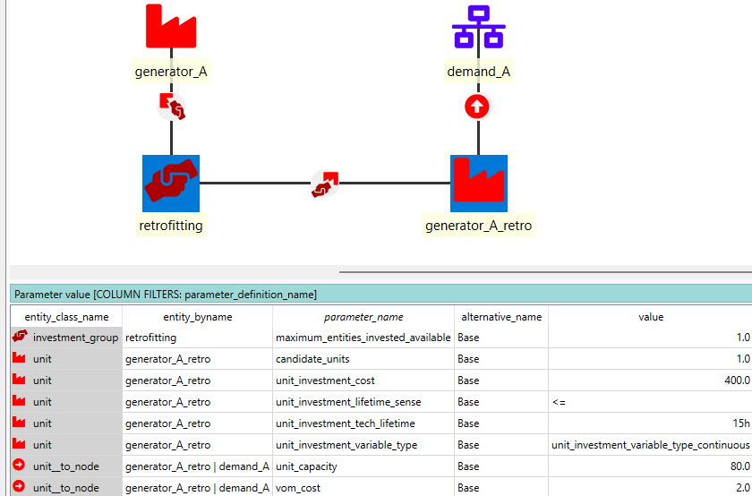
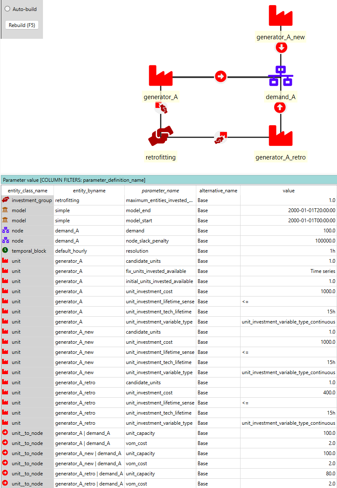
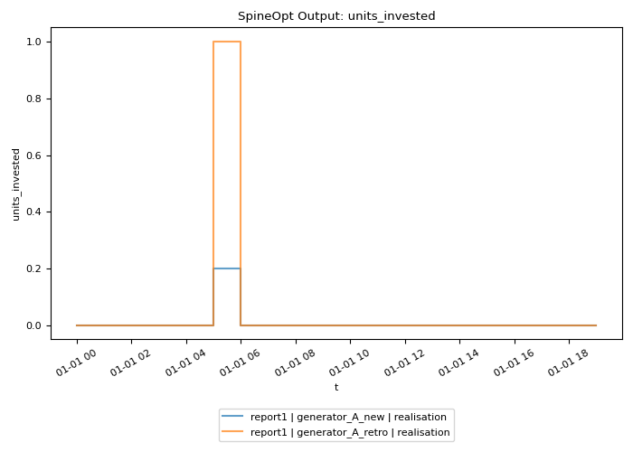
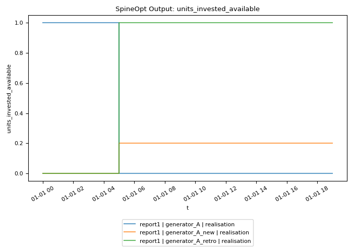
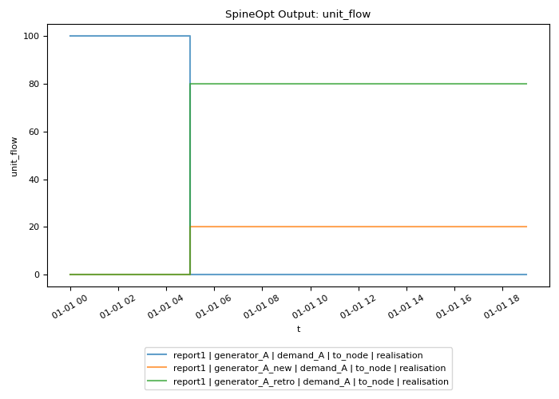

How to Model Retrofitting
This how-to introduces how we can model retrofitting in SpineOpt. The meaning of retrofitting may vary depending on the context and so does the modelling approach. Here we focus on the very fundamental case where one wants to retrofit an existing unit for the continuation of current supply generation. The introduced approach can also model retrofitting an existing unit for producing for a different demand. Same retrofitting processes for connection and node storage can be modelled likewise.
Model Setup
This section briefs the model instance setup with illustrating the key system specification. The file retrofittingexample1.json provides a complete database of this example model instance.
Basic System Instance Setup
The base system consists of
- a
node"demand_A" with a fixed energydemandof 100 over the entire modelling horizon - an existing
unit"generatorA" to supply "demandA" withunit_capacity="100" andvom_cost="2". This unit, however, will retire as of hour 5, specified by the 'Time series' value of parameterfix_units_invested_available. - an investable
unit"generatorAnew" of the same techno-economic characteristics as "generatorA", with `unitinvestmentcost="1000" and a 15 yearunitinvestmenttechlifetime`. This unit represents the as-usual replacement of "generator_A" when it gets retired.

Retrofitting Setup
For retrofitting, we introduce a new unit "generatorAretro" as an alternative investment option of "generatorAnew", with the same vom_cost and unit_investment_tech_lifetime, and different unit_capacity="80" and unit_investment_cost="400". In this configuration, we would model the case where 80% of "generator_A"'s capacity can be retrofitted in a cheaper investment cost than building a new one.
Particularly, the last and key steps to make "generatorAretro" a retrofitting option for "generator_A" include:
- create an
investment_groupentity "retrofitting", and connect it to "generatorA" and "generatorA_retro", - define the parameter
maximum_entities_invested_available="1".

This way, "generatorAretro" can only be invested in if "generator_A" is retired.
Model Structure
For simplicity, the example model spans 20 hour with an hourly resolution for both operationa and investment. Investment decisions are modelled as continuous value by defining the paramter unit_investment_variable_type="unitinvestmentvariabletypecontinuous".
The complete model configuration is provided below: 
Model Results
As expected, as of hour 5 when "generatorA" retires, the model invests in all capacity=80 of "generatorAretro" to continue supplying "demandA", and in capcity=20 new installation "generatorAnew" for the residue demand. The results are illustrated below:
Investment Related Variables
 
Operation Related Variables
